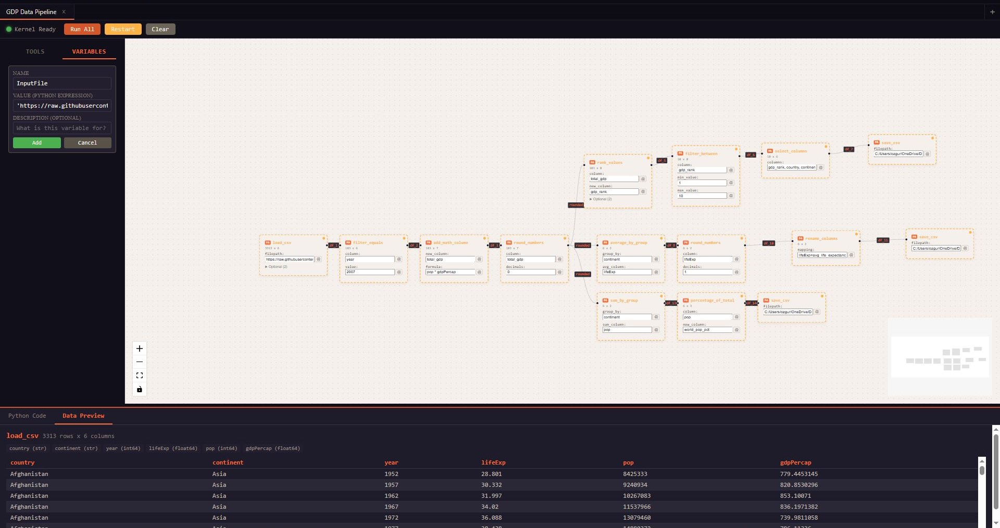
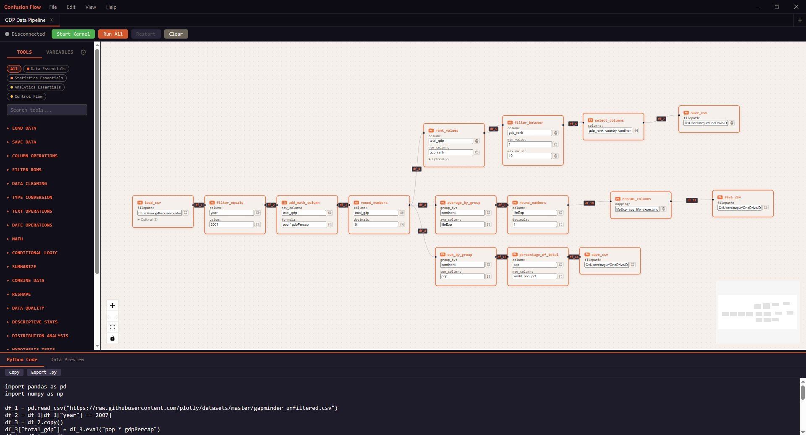
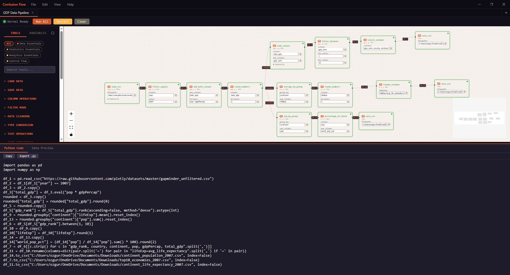
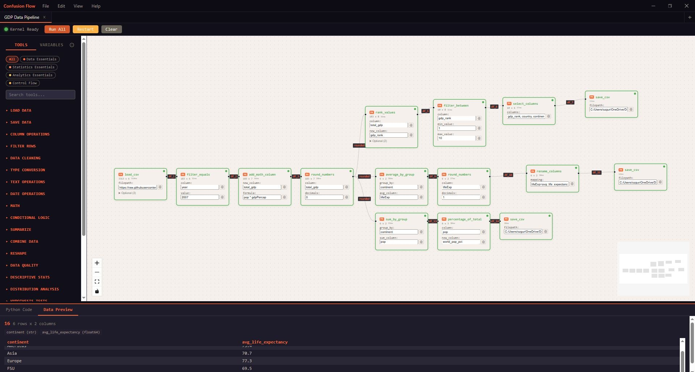
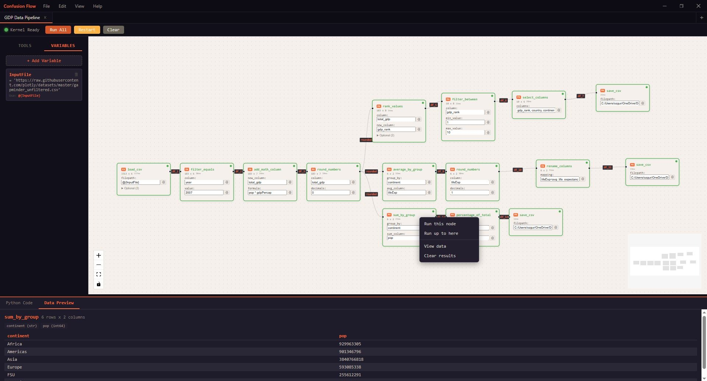
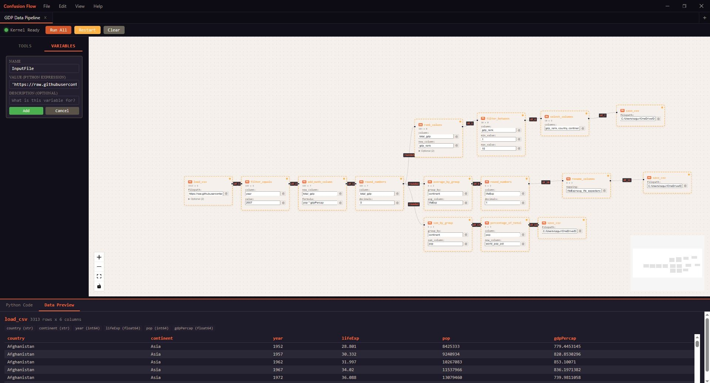
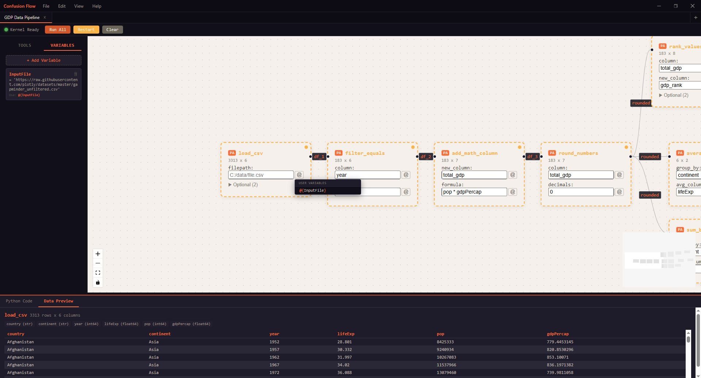
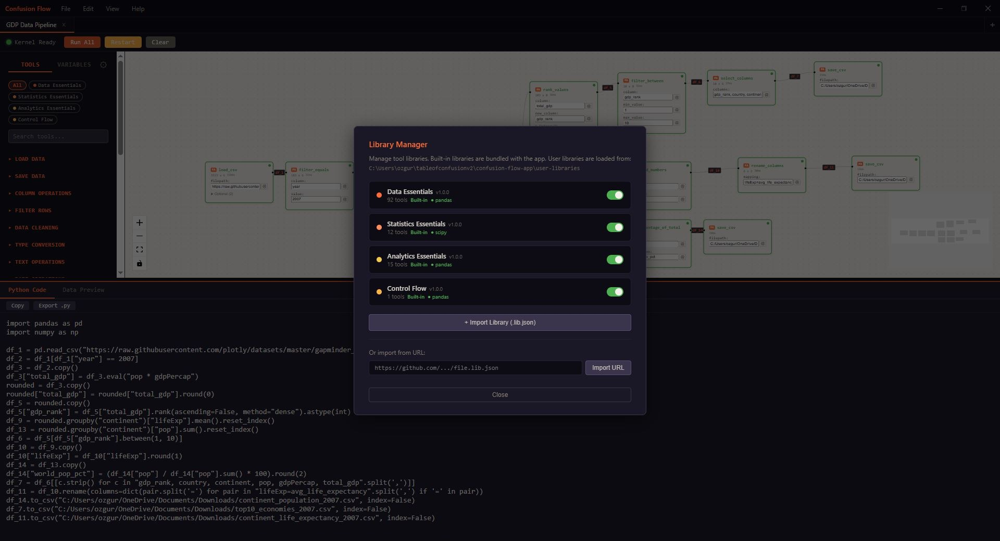

Confusion Flow is a visual pipeline builder that helps you wrangle data. Drag nodes, connect edges, and hit run.
Download Free
Connect to Claude Desktop or Claude Code with one click. Your AI can build, modify, and execute your pipelines through the built-in MCP server.
Design complete data pipelines on a visual canvas. Each node is a transform. Each edge is a data flow. Connect them like building blocks — the app handles execution order automatically.

Every node generates Python you can read, copy, and export. Not a black box. Not pseudocode. Actual Python that runs in a Jupyter kernel inside the app.

Hit Run All and watch every node execute in order. Data previews appear inline — tables, row counts, and column types — right below the canvas.

Right-click any node to run just that node, run everything up to it, view its output data, or clear results. Full granular control over your pipeline.

Define workflow variables and reference them anywhere with @{name} syntax. Change a file path or threshold once — every node that uses it updates automatically.


Manage tool libraries with a built-in package manager. 120+ built-in tools across pandas, scipy, and analytics. Import community libraries from a URL or write your own.

Filter, join, group, pivot, melt, rename, formula, sample, unique, fill NA, type cast — all the operations you actually use, as drag-and-drop nodes.
Ships with a full Python 3.13 runtime. No version or path dependencies. Missing a package? Auto-installs in seconds.
Every node generates Python code you can inspect. Deterministic and reproducible.
Execute the full pipeline, run up to a specific node, or run just one node. Data preview shows tables, scalars, and errors inline.
Import community tool libraries or write your own. One JSON file defines a new set of nodes with custom code generation.
Connect to Claude Desktop. Your AI can read your pipelines, add nodes, execute workflows, and preview data.
Free. No account. No telemetry. Just a desktop app that works.